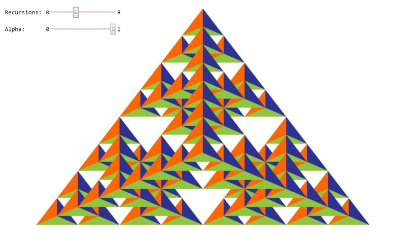

New Jersey Institute of Technology: CS 438
Interactive Computer Graphics
Task 3 (6 points)
Search for TODO_A1 in the JS file to find all tasks in the code!
Drawing of 3D objects:
3a: Create a 3d Sierpinski Gasket geometry composed of regular tetrahedra by calling this function recursively. Use the argument 'recursions' to specify the depth of the recursion. Use the function mix(a, b, lambda) for both the vertex and color interpolation with lambda = 0.5 (3 points)?
3b: Extend the previous vertex shader to handle 3d positions as input attributes (1 point).
3c: Adjust the vertex buffer object specification for positions and colors accordingly for usage of 3d points. In particular, you need to take care of the size, stride, and offset values of the buffer (1 point).
3d: Adjust the parameters of the drawArrays call in order to be able to deal with the new vertex buffer object (VBO) which now contains 3d-floating point positions (1 point).
Your result should look like in the image below, however, you can choose your own colors for the faces of the tetrahedra.
WebGL Canvas
Documentation
Please write a short report here. It should list what you have implemented, as well as a brief discussion and your conclusions. Also add as many comments in your code as possible---it will help us in judging your work.
Good Luck!
Instructor: Assoc. Prof. Dr. Przemyslaw Musialski
Email: przemyslaw.musialski@njit.edu